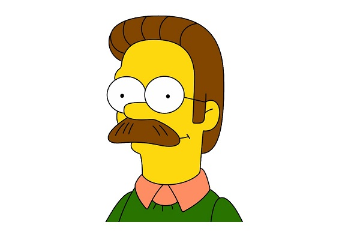

Homer Jay Simpson
- O criador nomeou o pai da família com o nome de seu pai, Homer Groening.
- Quando ele e Bart foram presos no Japão, ele foi capaz de falar japonês fluentemente em um período extremamente curto (“Thirty Minutes Over Tokyo”).
- Seu Q.I. baixo é devido ao "Gene Simpson" hereditário, o seu problema com o álcool, a exposição a resíduos radioativos, repetitivos traumas craniano, e ao lápis de cera situado no lobo frontal do cérebro.

Marjorie "Marge" Bouvier Simpson
- O seu penteado foi inspirado no filme A Noiva de Frankenstein.
- Seu nome é baseado no nome da mãe de Matt Groening
- Alguns dos empregos da Marge:
Agente Imobiliária, Artista com Palitos de Picolé, Dona de Fast Food, Dona de Academia, Padeira Erótica, Policial, Funcionária da Usina Nuclear, Vendedora do Tortas de Carne, Vendedora de Pretzels, Professora Substituta, Carpinteira, Escritora, Pintora, Dona do Moe's, Escultora, Fisiculturista, e Prefeita de SpringField.

Abraham "Abe" Jedediah Simpson II
- Ele tinha sua própria casa, que vendeu para que com o dinheiro seu filho Homer conseguisse comprar a sua e se casar, em contrapartida depois de viver algum tempo na casa de Homer, foi mandado para o asilo.
- Namorou a idosa mãe de sua nora Marge e em outro episódio, casou e se divorciou da Selma Bouvier, umas das irmãs gêmeas da Marge.
- A insensibilidade de Homer com seu próprio pai toma caminhos muitas vezes extremos, como quando Abraham perde seus dois rins apenas porque Homer não o deixou descer do carro para ir ao banheiro, durante uma bela e moral viagem familiar.

Bartholomew "Bart" J. Bouvier Simpson
- É revelado em alguns episódios, que o mal dentro de Bart deve-se ao fato de Marge ter acidentalmente bebido uma gota de álcool durante a gravidez, tornando-o no ruim que é.
- Ele possui sua própria carteira de motorista, recebida após salvar Springfield de um incêndio (mostrado em Big Little Girl).
- Apesar do déficit de atenção, aprendeu em pouquíssimas horas a falar francês, espanhol e japonês.

Margaret "Maggie" Evelyn Simpson
- Tem esse nome em homenagem à irmã mais nova do criador Matt Groening, Margaret "Maggie" Groening.
- Já se envolveu em ações perigosas como em quando atirou no Sr. Burns no episódio "Quem matou o Sr. Burns?" e eliminou alguns caras que tentaram matar Homer.
- Sabe tocar saxofone melhor que Lisa, mas sua irmã é a única a saber disso e não tem a menor intenção de mostrar isso às outras pessoas.

Nedward Flanders Jr.
- Seu sobrenome vem da Flanders St. Em Oregon, a cidade natal de Matt Groening.
- Mike Scully observou que Flanders é "tudo o que Homer gostaria de ser, embora ele nunca o admita".
- De acordo com o Christianity Today, "hoje [em 2001] em faculdades americanas e campi do ensino médio, o nome mais associado com a palavra "Christian" - além de Jesus - não é o papa ou Madre Teresa ou mesmo Billy Graham. Mas sim Ned Flanders.